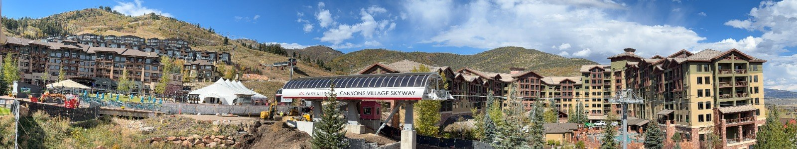

Most families who stay in Canyons Village and ski the mountain could skip the rental car entirely. Whether you should depends on about three questions.

The honest answer is that it depends less on Park City and more on where you are staying and what you plan to do in the evenings. The ski-day question and the going-out question are different, and treating them separately makes the decision straightforward.
When you do not need one
If you are staying in Canyons Village, skiing Park City Mountain, and eating mostly in the village or in your own kitchen, a car will sit in a parking space for a week and you will not miss it.
You walk to the lift. The Canyons Village base area has rental shops, a lift ticket office, restaurants, a small grocery and a pharmacy. A transfer brings you in from the airport and takes you back out. A free bus connects the village to Main Street for evenings in town. Plenty of families do exactly this and never think about a car again.
The key condition is that your plans stay in the village most of the time. A week of Canyons Village days with one or two evenings in town — common for groups with young children — is very manageable without a car. Where it breaks down is when the group wants to ski a different resort, eat out every evening, or run large errands mid-week.
When it earns its keep
- You want to ski other resorts. Utah's density is its selling point, and several big mountains are within an hour of Park City. Getting to any of them is difficult without your own transport.
- You are eating on Main Street most evenings. Main Street is about ten minutes by car. A bus or a taxi works, but with eight people and a reservation time the car is simpler, and at the end of a long day the return trip is easier when it is waiting outside.
- You are a large group with a complicated schedule. Early flights, late arrivals and split plans are easier with your own transport. For a group of eight or more across two or three units, co-ordinating shared transfers gets expensive and unwieldy fast.
- You are doing a large grocery shop. Hauling a week of food for eight is a car job, though it can be a single trip on the way in from the airport rather than a mid-week errand.
- You are bringing ski equipment. Transfer operators list seat capacity, then qualify those numbers heavily once ski bags and hard cases enter the equation. At least one operator caps at three hard cases regardless of how many seats the vehicle has. When you book a transfer, tell the operator exactly how many passengers and how many ski bags or hard cases — not just people. The airport transfer guide covers how to compare operators on this point.
How the free bus works
Park City Transit and High Valley Transit run all routes fare-free, all year round. That includes winter ski-season service: you board, ride, and get off, with no fare box and no pass to buy. Both networks operate routes that connect Canyons Village, the Old Town Transit Center on Main Street, and other resort and lodging areas in and around Park City.
The service is genuinely useful and most visitors underuse it. The key route for a Canyons Village group is the connection to the Old Town Transit Center, which puts you at one end of Main Street. For an evening at a Main Street restaurant with eight people, the bus is simpler than co-ordinating taxis or a rideshare, and it is free in both directions.
The practical limits are what you would expect: it runs to a timetable, and during holiday weeks the vehicles are busier. Download the transit app before you go, check when the last departure of the evening runs before you sit down to dinner, and add a few minutes of walking time from your villa to the nearest stop. Planning around the schedule rather than discovering it at the end of the night is the difference between the bus being convenient and the bus being a problem.
There is also a free trolley that runs the length of Main Street itself, and the Richardson Flat park-and-ride on the edge of town for visitors who drive in for a day on Main Street rather than from a resort base.
Take a transfer from the airport, do one big grocery run on the first afternoon, use the free bus for evenings in town, and skip the rental car. For a week in Canyons Village this covers almost everything and costs less than a week of rental plus parking.
Your options at a glance
The table below is a rough guide to what each option does well and where it falls short.
| Transport | Best for | Cost | Main limitation |
|---|---|---|---|
| Walk to lift | Canyons Village ski days | Free | Does not reach town or other resorts |
| Free bus (Park City Transit / High Valley Transit) | Evenings on Main Street, town errands | Free | Runs to a timetable; busier at peak weeks |
| Rideshare or taxi | One-off trips, late-night return, odd hours | Per ride | Variable wait; group size limits |
| Airport transfer | Arrival and departure | Flat rate | Equipment capacity; must book ahead |
| Rental car | Multi-resort days, large grocery runs | Daily rate plus parking | Parking cost; not needed most ski days |
A rental car typically costs more than a week of ad hoc taxis unless you are doing multi-resort days or large grocery runs. For a group that stays in the village most of the time, the break-even almost never arrives.
Parking
If you do bring a car, check what parking costs at your accommodation and whether it is guaranteed. Resort parking during a holiday week is not free by default, and the price for a week adds up to a real number that belongs in your budget rather than as a surprise at checkout.
Canyons Village now charges a daily rate in its garage. The free Canyons Village Skyway carries you from the garage to the base area, which is a better arrival than it was with the old Cabriolet lift, but it is still a cost you avoid entirely by staying in the village and walking to the lift.
If you are parking on Main Street for a day, the most practical options are the garages on Main Street and Park Avenue, and parking on Swede Alley. Street parking in winter is limited and fills quickly during holiday weeks.
The clearest case for a car is a day at the other resort. Deer Valley sits across town, on a different pass, and opens later in the season, so getting there is a planned excursion rather than a walk to a lift.
Common questions
Can you get around Park City without a car?
Yes. Park City Transit and High Valley Transit run fare-free on all routes, year-round, and if you stay in Canyons Village you can walk to the lift. Many visitors use a transfer from the airport and never rent a car.
Is there a free bus in Park City?
Yes. Park City Transit and High Valley Transit operate all routes fare-free, all year round. In winter the service connects Canyons Village, the Old Town Transit Center on Main Street, and other resort and lodging areas. Download the transit app for current schedules, since holiday-week frequencies are higher than shoulder weeks.
Is parking free at Park City resorts?
Not by default. Parking policies and prices vary by property and by season, and during peak weeks it is usually charged. Confirm it with your accommodation before you assume it is included.
How do I get from Salt Lake City airport to Park City without a car?
Airport transfer companies run direct to Canyons Village and other lodging areas, usually around an hour. Book ahead during holiday weeks, and when you do, tell them exactly how many passengers and how many ski bags or hard cases, since some vehicles are listed for more passengers than they can take when everyone brings equipment.
Can a large group get to Main Street without a car?
Yes. The free Park City Transit bus connects Canyons Village to the Old Town Transit Center on Main Street in winter. For eight people it is simpler than co-ordinating multiple rideshares, particularly at the end of the evening. Check the schedule before the evening starts rather than arriving at the stop and discovering a long wait.
The villa this guide comes from
We own a Premier Two-Bedroom Villa inside Westgate Park City Resort, in Canyons Village. It is 1,100 square feet, two king bedrooms and two queen sleeper sofas, so it sleeps eight in one unit. Full kitchen and two bathrooms, with a short walk to the Red Pine Gondola.
Available for Presidents' Week 2027, 13 to 20 February, and for Spring Break 2027, 21 to 28 March. We rent it ourselves rather than through an agency.